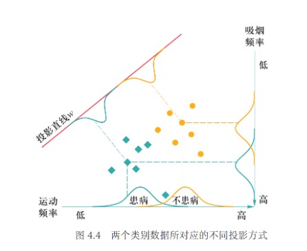
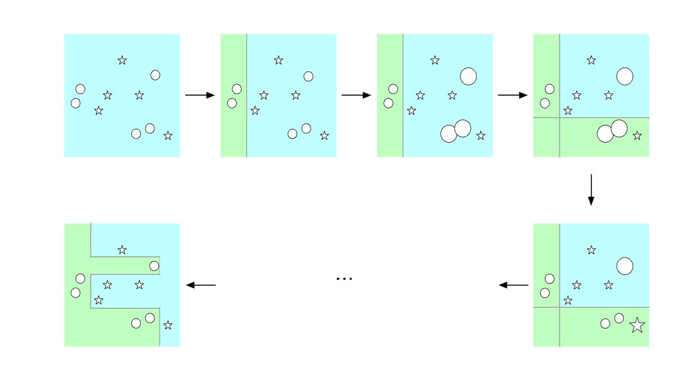

Chapter3 机器学习
机器学习的分类：
- 监督学习： 数据有标签，一般为回归或分类等任务
- 无监督学习： 数据无标签，一般为聚类或降维等任务
- 强化学习： 序列数据决策学习，一般从环境交互中学习
3.1 监督学习
监督学习的基本概念
监督学习的建模
训练集中一共有$n$个标注数据，第$i$个标注数据记为$(x_i,y_i)$，其中第$i$个样本数据为$x_i$，$y_i$是$x_i$的标注信息
我们的目标是建立一个映射函数$f:x\mapsto y$，使得$f(x_i)$尽量等于$y_i$
监督学习的重要元素
损失函数：
对于$x_i$，损失函数用于计算真实值$y_i$与预测值$f(x_i)$之间差距，我们的目标是使得损失函数总和尽可能小

训练数据/测试数据/未知数据：
用训练数据集学习映射函数$f$
用测试数据集测试映射函数$f$
用未知数据集使用映射函数$f$
经验风险/期望风险：
| 经验风险 | 期望风险 |
|---|---|
| $\frac{1}{n}\sum\limits_{i=1}^nLoss(y_i,f(x_i))$ | $\int_{x\times y}Loss(y,f(x))P(x,y)dxdy$ |
| 训练数据集中数据（有限）产生的平均损失 | 测试数据集中数据（无限）产生的联合分布期望损失 |
| 经验风险越小，说明学习模型对训练数据拟合程度越好 | 期望风险越小，说明学习模型越好 |
当训练数据数$n\rightarrow\infty$时，经验风险趋于期望风险
过学习/欠学习：

结构风险最小化：
为了防止过学习，结构风险最小化在经验风险的基础上引入正则项或惩罚项来降低模型复杂度，既最小化经验风险，又力求降低模型复杂度，在二者间寻找平衡
$\frac{1}{n}\sum\limits_{i=1}^nLoss(y_i,f(x_i))+\lambda J(f)$
- $J(f)$：正则化因子或惩罚项因子
- $\lambda$：调整惩罚强度的系数
监督学习的两种方法
判别模型：
学习目标：映射函数$f$或者条件概率分布$P(Y|X)$
生成模型：
学习目标：联合概率分布$P(X,Y)$（通过似然概率$P(X|Y)$和类概率$P(Y)$的乘积来求取）
回归分析
分析不同变量之间存在关系的研究叫回归分析，刻画不同变量之间关系的模型被称为回归模型
单变量线性回归
符号表示： * $m$：训练集样本数 * $x$：输入变量/特征 * $y$：输出变量/目标 * $(x_i,y_i)$：第$i$个训练样本 * $h$：解决方案/函数/假设
单变量线性回归分析即拟合一条直线： $h_\theta(x)=\theta_0+\theta_1(x)$ 使用误差平方和函数： $J(\theta_0,\theta_1)=\frac{1}{m}\sum\limits_{i=1}^m(h_\theta(x_i)-y_i)^2$ 作为回归问题的代价函数，来衡量预测值与真实值的接近程度 我们的目标是选择合适的$\theta_0$和$\theta_1$，使得$J(\theta_0,\theta_1)$最小化

梯度下降算法：
梯度下降算法是最常见的一种函数最小化算法
优化思路： * 设置一组初始的参数（比如说设置$\theta_0=\theta_1=0$），作为优化的起点 * 不断改变$\theta_0$，$\theta_1$，使$J(\theta_0,\theta_1)$减小，直到到达最小值，这里的实现思路是选择该点处下降最快（最陡峭）的方向
$\theta_0'=\theta_0-\alpha\frac{\partial}{\partial\theta_0}J(\theta_0,\theta_1)$ $\theta_1'=\theta_1-\alpha\frac{\partial}{\partial\theta_1}J(\theta_0,\theta_1)$ $\theta_0=\theta_0'$ $\theta_1=\theta_1'$
需要注意的是：多个参数的更新应当同步进行
$\alpha$为控制迈步大小的正参数（学习率） 偏导数为迈步的大小和方向
即便学习率保持不变，梯度下降仍然能够收敛到局部最优（偏导数逐渐减小直到0）
对于线性回归模型，只有一个全局最优点，因此不用担心陷入“局部”最优的问题
| 批量梯度下降 | 随机梯度下降 | 小批量梯度下降 |
|---|---|---|
| 在梯度下降的每一步都使用训练集的全部样本 | 每次只使用一个样本 | 每次使用一部分样本 |
| 最精确，但样本数较大时速度慢 | 速度最快，但相对不精确 | 折中，在实际运用中最为常见 |
最小二乘法：
实际上记为针对于单变量线性回归的梯度下降算法，可简化为：求解方程组$\begin{cases} \frac{\partial J(\theta_0,\theta_1)}{\partial\theta_0}=0\ \frac{\partial J(\theta_0,\theta_1)}{\partial\theta_1}=0 \end{cases}$
多元线性回归
逻辑回归
研究某一事件发生的概率与若干因素之间的关系，这种情况下不适合用线性回归模型，因为其对离群点非常敏感，导致模型建模不稳定，结果有偏
逻辑回归模型：$\ln\frac{p}{1-p}=\beta_0+\beta_1x_1+···+\beta_qx_q\Longrightarrow p=\frac{1}{1+e^{-(\beta_0+\beta_1x_1+···+\beta_qx_q)}}$
优势比：$OR=\frac{p}{1-p}$ 函数性质： 单调递增，值域为$(0,1)$，当输入$x=[x_1,···,x_q]$趋于一定数值后，输出$p$无限逼近1或0，当$z=\beta_0+\beta^Tx=0$时，输出$p$为0.5

决策树
决策树是一种通过树形结构进行分类的监督学习方法，每个非叶子节点表示对分类目标在某个属性上的一个判断，每个叶子节点表示一种分类结果

构造决策树要解决的问题： * 收集属性完全且分类好的数据 * 确定用于分类的属性 * 选择最佳的分类原则 * 设计分类停止条件 * 节点包含的数据太少不足以分裂 * 继续分裂数据集对树生成的目标(例如ID3中的熵下降准则)没有贡献 * 树的深度过大不宜再分
通用的决策树分裂目标是使整棵树的熵总量最小
ID3算法
信息熵：
衡量集合纯度的指标。信息熵越大，说明属性分配越平均，不具有鉴别度；信息熵越小，说明属性分配越一致，具有鉴别度。
给定一个集合$S$，其中的样本最终被分类为$y_1,y_2,···,y_n$，比例依次为$p_1,p_2,···,p_n$，则$S$的信息熵为
$E(S)=-\sum\limits_{i=1}^np_i\log_2p_i$
信息增益：
衡量集合纯度增大程度的指标，作为决策树分支属性选择的依据。
给定一个集合$S$，其依据属性$A$分类得到集合$S_1,S_2,···,S_m$，则$S$中属性$A$的信息增益为
$G(S,A)=E(S)-E(A)=E(S)-\sum\limits_{i=1}^{m}\frac{|S_i|}{|S|}E(S_i)$
算法流程：
- 计算当前的信息熵
- 考察任一属性，分成若干子集
- 每个子集计算信息熵，然后计算得到每个属性的信息增益
- 从所有属性中选择信息增益最大的属性作为当前决策
例：
根据天气的四个属性，使用ID3算法，构建决策树。 记“适合打网球”为“正例”，“不适合打网球”为“负例” 初始状态下，14个实例中有9个正例5个负例 $E(Initial)=-(\frac{9}{14}\log_2\frac{9}{14}+\frac{5}{14}\log_2\frac{5}{14})=0.940$ 若选择Outlook为下一步的分类属性，则分成Sunny（2正3负），Overcast（4正0负），Rain（3正2负） $E(A)=-\frac{5}{14}(\frac{2}{5}\log_2\frac{2}{5}+\frac{3}{5}\log_2\frac{3}{5})-\frac{4}{15}(\frac{4}{4}\log_2\frac{4}{4}+\frac{0}{4}\log_2\frac{0}{4})-\frac{5}{15}(\frac{3}{5}\log_2\frac{3}{5}+\frac{2}{5}\log_2\frac{2}{5})=0.694$ 因此，这种划分的信息增益是 $G(Initial,Outlook)=0.940-0.694=0.246$ 同理 $G(Initial,Temperature)=0.029$ $G(Initial,Humidity)=0.151$ $G(Initial,Wind)=0.048$ Outlook属性的增益值最大，因此以其作为分类依据，分得三个子集，生成三个子节点 对每个子节点递归采用上述过程，直至每个节点都成为叶子节点

存在问题：
若把“编号”也作为一个候选划分属性，则其信息增益一般远大于其他属性，这时容易导致模型过拟合，即信息增益对可取值数目较多的属性有所偏好
增益率：
$GainRatio(S,A)=\frac{Gain(S,A)}{-\sum\limits_{i=1}^m\frac{|S_i|}{S}\log_2\frac{|S_i|}{S}}$
应对过拟合
相比于直接根据信息增益选择分类属性，更好的方式是先在候选属性中找出信息增益高于平均水平的属性，再从中选取增益率最高的。
剪枝处理：
预剪枝： 对每个节点在划分前进行评估，若当前节点的划分不能带来决策树泛化性能提升，则停止划分并将当前节点记为叶节点，其类别标记为训练样例数最多的类别 * 优点：降低过拟合风险，减小时间开销 * 缺点：有欠拟合风险
后剪枝： 先从训练集生成一棵完整的决策树，然后自底向上地对非叶节点进行考察，若将该节点对应的子树替换为叶节点能带来决策树泛化性能提升，则将该子树替换为叶节点 * 优点：欠拟合风险小 * 缺点：时间开销大
线性判别分析（LDA）
线性判别分析（LDA）是一种基于监督学习的降维方法，对于一组具有标签信息的高维数据样本，LDA利用其类别信息，将其线性投影到一个低维空间上，实现类内间隔尽可能小，类间间隔尽可能大。

二分类问题
设样本集$D={(x_1,y_1),(x_2,y_2),···,(x_n,y_n)}$ 其中 $x_i\in R^d$，为第$i$个样本的$d$个属性 $y_i$为第$i$个样本的标签（最终分类结果），$y_i\in{C_1,C_2}$ 投影函数$y(x)=w^Tx$，将样本投影到一维空间，我们需要求的就是最佳的$w\in R^d$
请注意：这里的$x$和$w$均为列向量，即$n\times 1$
第一步：分别计算两个类别一开始的均值向量
$m_1=average(x_i)$，$y_i=C_1$
$m_2=average(x_i)$，$y_i=C_2$
第二步：分别计算两个类别投影之后的协方差矩阵
$s_1=\sum\limits_{y_i=C_1}(w^Tx_i-w^Tm_1)^2=w^T[\sum\limits_{y_i=C_1}(x_i-m_1)(x_i-m_1)^T]w=w^T\sum_1w$
$s_2=\sum\limits_{y_i=C_2}(w^Tx_i-w^Tm_2)^2=w^T[\sum\limits_{y_i=C_2}(x_i-m_2)(x_i-m_2)^T]w=w^T\sum_2w$
其中，$w$未知，作为参数保留
$s_1$，$s_2$均为实数，可用来衡量同一类别中样本之间的分散程度，为了使类内间隔尽可能小，需要最小化$s_1+s_2$的取值
第三步：构建需要最大化的目标函数
我们已知需要最小化$s_1+s_2$（类内间隔最小化），还需要最大化两个类别投影之后的均值向量之差（类间间隔最大化），因此，给出函数：
$J(w)=\frac{||w^Tm_1-w^Tm_2||^2}{s_1+s_2}$
我们的目的是找到$w$，使得$J(w)$取最大值
$J(w)=\frac{||w^T(m_2-m_1)||^2}{w^T\sum_1w+w^T\sum_2w}=\frac{w^T(m_2-m_1)(m_2-m_1)^Tw}{w^T(\sum_1+\sum_2)w}=\frac{w^TS_bw}{w^TS_ww}$
$S_b=(m_2-m_1)(m_2-m_1)^T$称为类间散度矩阵，衡量两个类别均值点之间的分离程度
$S_w=\sum_1+\sum_2$称为类内散度矩阵，衡量每个类别中数据点的分离程度
第四步：求$w$，使得$J(w)$取最大值
由于$J(w)$的分子和分母都是关于$w$的二项式，因此最后的解只与$w$的方向有关，与$w$的长度无关，因此可令分母$w^TS_ww=1$，然后用拉格朗日乘子法来求解这个问题。
拉格朗日乘子法指路：
忽略中间过程，最后的结论为：
$w=S_w^{-1}(m_2-m_1)$
多分类问题
总类别数为$K$
需要从$n$维降到$r$维
投影矩阵$W=(w_1,w_2,···,w_r)$，为$n\times r$矩阵
投影函数$y(x)=W^Tx$
第$i$类样本投影之前的均值向量为$m_i$，所有样本投影之前的均值向量为$m$
第$i$类样本的总数为$N_i$，所有样本的总数为$N$
类间散度矩阵$S_b=\sum\limits_{i=1}^K\frac{N_i}{N}(m_i-m)(m_i-m)^T$
类内散度矩阵$S_w=\sum\limits_{i=1}^K\sum_i$，其中$\sum_i=\sum\limits_{x\in class~i}(x-m_i)(x-m_i)^T$
结论：所求投影矩阵$W$由$S_w^{-1}S_b$前$r$个最大特征值所对应的特征向量$(w_1,w_2,···,w_r)$组成
Ada Boosting算法
通过集成手段来达到提升算法性能的目的
核心思想：
对于一个复杂的分类任务，可以将其分解为若干子任务（弱分类器），然后将若干子任务完成方法综合，最终完成该复杂任务（强分类器）

核心问题：
- 改变训练数据的权重： 提高在上一轮中分类错误样本的权重
- 将一系列弱分类器组合成强分类器： 通过加权来提高分类误差小的弱分类器的权重，让其在最终分类中起到更大作用
算法描述：
第一步：初始化每个训练样本的权重
假设有$N$个待分类的样本$(x_1,y_1),(x_2,y_2),···,(x_N,y_N)$，则每个样本的权重为$w_{1i}=\frac{1}{N}$，权重状态记为$D_1=(w_{11},w_{12},···,w_{1N})$
第二步：使用权重状态为$D_m$的训练数据来学习得到第$m$个弱分类器$G_m$，并计算其分类误差
$err_m=\sum\limits_{i=1}^Nw_{mi}I(G_m(x_i)\neq y_i)$
当$G_m(x_i)\neq y_i$时$I$取1，否则取0
第三步：计算弱分类器$G_m$的权重
$\alpha_m=\frac{1}{2}\ln\frac{1-err_m}{err_m}$
第四步：更新训练数据的分布权重
$w_{m+1,i}=\begin{cases} \frac{w_{mi}}{Z_m}e^{-\alpha_m},G_m(x_i)=y_i\ \frac{w_{mi}}{Z_m}e^{\alpha_m},G_m(x_i)\neq y_i\ \end{cases}$
$Z_m$为归一化因子
可见，如果某个样本无法被第$m$个弱分类器分类成功，则需要增大该样本权重，否则减少该样本权重。这样，被错误分类样本会在训练第$m+1$个弱分类器时被重点关注。
在每一轮学习过程中，Ada Boosting算法均在划重点（重视当前尚未被正确分类的样本）
第五步：线性加权组合弱分类器得到强分类器
$f(x)=\sum\limits_{i=1}^M\alpha_mG_m(x)$
$G(x)=sign(f(x))$，将样本分为$+1$和$-1$